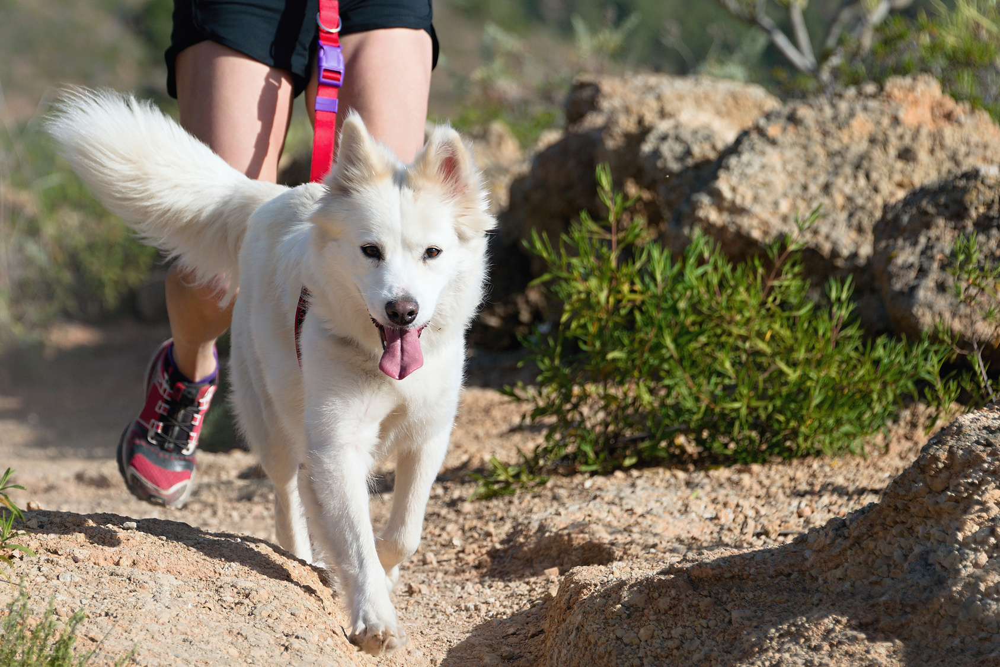

Agility para perros
El can tiene que atravesar un circuito de 100-200 metros con más de veinte obstáculos. El peludo tiene que superar muros, ruedas, túneles, balancines, vallas de salto, slaloms, mesas, pasarelas y muchos más obstáculos en el menor tiempo posible y sin cometer errores.
El compañero humano es quien guía al perro con gestos y gritos de
ánimo a través del circuito agility.
El agility no solo ejercita
el cuerpo y la mente del perro y del humano, además los une como
equipo. Dado que hay circuitos agility para perros de diferentes
tamaños es ideal para casi todos los canes.
Canicross
Es una especie de carrera de campo a través (cross country) en la que el perro, unido a su compañero humano mediante una línea de tiro, tira de este en las superficies planas o empinadas. En este caso, al contrario que al salir a correr, es el perro quien marca la velocidad.
El canicross es una actividad ideal para las personas deportistas y para los perros a los que les encanta correr.
Frisbee para perros
Se trata de mucho más que de traer el disco de vuelta. Existen diferentes variaciones de tiros y trucos que tanto el perro como el cuidador aprenderán, como el freestyle, los tiros cortos y los lanzamientos a larga distancia.

El frisbee para perros resulta ameno para todos los perros que cuentan con buen estado de salud, que tienen gran necesidad de moverse y a los que les encanta jugar.
Natación para perros
La natación es un deporte ideal para perros con problemas de sobrepeso
o de espalda, ya que les ayuda a mejorar la coordinación. Si lo
acompañas de una pelota se divertirán al máximo.
Aunque si tu perro es de los que prefiere mirar desde la orilla, mejor
no le obligues a mojarse, o si prefiere la piscina recuerda garantizar
el bienestar de tu perro.
Doga
Se trata de practicar yoga con perros. Esta actividad se desarrolla en
varias partes durante cada sesión: los estiramientos, los masajes, las
posturas inspiradas en el yoga y la relajación.
La actividad resulta sencilla y no resulta nada complejo iniciarse en
ella. De hecho, cualquier persona con su perro puede llevarla a cabo.
No obstante, lo más recomendable es que se comience siendo orientado
por un profesional en la materia para evitar lesiones y cuidar la
salud de ambos.